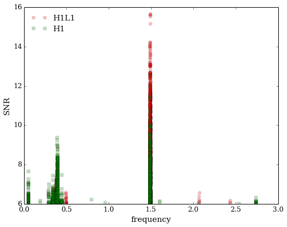

F-statistic candidate signal search
Production serial code for a network of detectors is available at here. OpenMP version is at this location. To get the whole pipeline, run git clone https://github.com/mbejger/polgraw-allsky.git.
Algorithm flowchart

1. Prerequisites
The code is written in standard C. GNU Scientific Library (GSL) and the FFTW library (version 3.0 or later) are needed to run the code. GNU struct dirent objects are used to read the directories.
Optionally, SLEEF or YEPPP!, libraries for high-performance computing that are optimized for speed are used to evaluate the trigonometric functions in the search code. These libraries are ported with the source code and are located in src/lib. The choice which of these libraries to use has to be made at compilation time by modifying the Makefile.
2. Compilation. Example for serial CPU code
Run make gwsearch-cpu or make in search/network/src-cpu (default C version not-optimized with openMP; for the openMP version see the search/network/src-openmp directory). Resulting binary is called gwsearch-cpu. Modify the Makefile to fit your system. By default the YEPPP! library is selected.
3. How to run the program?
Minimal call to gwsearch-cpu is as follows (code compiled with the GNUSINCOS option):
./gwsearch-cpu -d data_dir -o output_dir -i frame -b band
where
data_diris the base directory of input data files,output_diris a directory to write the output,frameis the number of time frame to be analyzed,bandis the number of the frequency band (see the data structure description for details).
3.1. Full list of switches
| Switch | Description |
|---|---|
| -d, -data | Data directory (default is .) |
| -o, -output | Output directory (default is ./candidates) |
| -i, -ident | Frame number |
| -b, -band | Band number |
| -l, -label | Custom label for the input and output files |
| -r, -range | Use file with grid range or pulsar position |
| -g, -getrange | Write grid ranges & save fft wisdom & exit (ignore -r) |
| -c, -cwd | Change to directory <dir> |
| -t, -threshold | Threshold for the F-statistic (default is 20) |
| -h, -hemisphere | Hemisphere (default is 0 - does both) |
| -p, -fpo | Reference band frequency fpo value |
| -s, -dt | Data sampling time dt (default value: 0.5) |
| -u, -usedet | Use only detectors from string (default is use all available) |
| -x, -addsig | Add signal with parameters from <file> |
| -n, -narrowdown | Narrow-down the frequency band (range [0, 0.5] +- around center) |
Also:
| --whitenoise | White Gaussian noise assumed |
| --nospindown | Spindowns neglected |
| --nocheckpoint | State file will not be created (no checkpointing) |
| --help | This help |
3.2. Network of detectors
For the examplary input data time streams xdatc_001_0101.bin provided in test-data-network.tar.gz, the call is as follows:
LD_LIBRARY_PATH=lib/yeppp-1.0.0/binaries/linux/x86_64 ./gwsearch-cpu -data ./test-data-network -ident 001 -band 0101 -usedet H1V1
where the LD_LIBRARY_PATH points to the location of the YEPPP! library.
The program will proceed assuming that the data directory ./test-data-network/001 for the time frame 001 contain subdirectories for the network of detectors (here H1 and V1) with input time series xdatc_001_0101.bin and the ephemerids files DetSSB.bin in each subdirectory. The grid of parameters files is expected to be in ./test-data-network/001/grid.bin. Switch -usedet H1 (-usedet V1) select the appropriate data and performs single detector search.
3.3. Network of detectors in spotlight search (depreciated)
For the H1L1 network of detectors, using the test-data-network-injection.tar.gz to search towards a pre-defined direction (spotlight search) in one 2-day segment:
LD_LIBRARY_PATH=lib/yeppp-1.0.0/binaries/linux/x86_64 ./search -data ./test-data-network-injection -ident 205 -band 000 -spotlight ./test-data-network-injection/205/spot_J0322+0441.dat -fpo 1391.3 -label J0322+0441 -dt 2
The injection corresponds to a pulsar J0322+0441. Note the differences with respect to the minimal call:
- instead of calculating the band frequency
fpofromband, we provide it directly with the-fposwitch (-band 000is invoked for legacy), - the input data is denoted with the pulsar label, hence the
-labelswitch, - the sampling time
dtis now set to2 s, -spotlightswitch points to the location of the spotlight file which contains the list of sky positions, and corresponding number and values of spindowns, in the following format: \begin{equation} h\, N_{sky}\, m_1\, n_1\, N^s_{1}\, s_{1}\, \dots\, s_{N^s_1}\, m_2\, n_2\, N^s_{2}\, s_1\, \dots\, s_{N^s_2}\, \dots,
\end{equation} where$h$ is the hemisphere number (1 or 2),$N_{sky}$ is the total number of sky positions in a given spotlight search,$m_i$ and$n_i$ are the sky positions in linear (grid) coordinates,$N^s_{i}$ is the number of spindowns, and$s_{i}\,\dots\, s_{N^s_i}$ and the spindowns (in linear coordinates), corresponding to the$i-$ th sky position.
Results are as follows:

3.4. One-detector version
In the case of one-detector and gpu-current versions, test data is in
test-data.tar.gz.
The directory 001 contains directly the DetSSB.bin, grid.bin and xdatc_001_101.bin files.
4. Data structure
We describe the structure using the VSR1 data as an example. Time of the first sample in MJD (Modified Julian Date) is 54239.00 (corresponding to 2007/05/18, UTC 12:00).
In this run the data was divided into 68 time frames, each of them 2
sideral days long, rounded to half second (172328 seconds each).
Since we use the sampling time of 0.5s, total number of data points
in each time frame is N=344656.
Frames are labelled with three-digit consecutive number,
from 001 to 068. Frame label is the name of a subfolder, containing
all narrowband sequences corresponding to that frame, e.g., ./042.
Beginning MJD of each time frame is saved in the nnn/starting_date
file:
% cat 042/starting_date
54320.7760185185
Reference band frequency fpo is defined for each band as
bbb is the band number, and dt is the data sampling time (0.5 s for VSR1 data).
VSR1 database contains 929 narrow (1 Hz,
5. Input data files
A single run requires 2 data files for each detector DD, stored in data_dir/nnn/DD
subdirectory, where DD is H1 (Hanford), L1 (Livingston), or V1 (Virgo Cascina):
-
xdat_nnn_bbb.bin- time-domain narrow-band data sequence, sampled at half second.nnnis the number of time frame,bbbis the number of frequency band, -
DetSSB.bin- location of the detector w.r.t. the Solar System Barycenter (SSB), in Cartesian coordinates, sampled at half second (3dim array of sizeN). Last two records of this file are the anglephir, determining the position of Earth in its diurnal motion, and the obliquity of the eclipticepsm, both calculated for the first sample of the data,
as we as the sky positions-frequency-spindown grid file in linear coordinates
(common for all the detectors), stored in data_dir/nnn:
grid.bin- generator matrix of an optimal grid of templates.
6. Output files
Binary output files, containing trigger events above an arbitrary
threshold, are written to the output_dir directory. There are two output
files for every input data sequence: triggers_nnn_bbb_1.bin and
triggers_nnn_bbb_2.bin, where 1 and 2 correspond to northern and
southern ecliptic hemisphere. Every trigger (candidate) event occupies 40
consecutive bytes (5 double numbers), with the following meaning:
| Record no. | |
|---|---|
| 1 | frequency [radians, between 0 and fpo |
| 2 | spindown [Hz s-1] |
| 3 | declination [radians] |
| 4 | right ascension [radians] |
| 5 | signal to noise ratio |
7. Auxiliary files
There is a couple of auxiliary files created by the search
in the working directory:
-
wisdom-hostname.dat- "wisdom" file created by theFFTW. Thehostnamevariable is determined by a call togethostname(), -
state_nnn_bbb.dat- checkpoint file. The search can be safely restarted, calculations will continue from the last grid position saved to this file. After successful termination, checkpoint file is left empty.
8. Versions
Polgraw-allsky code comes also as an MPI, network of detectors spotlight search and a GPU version.